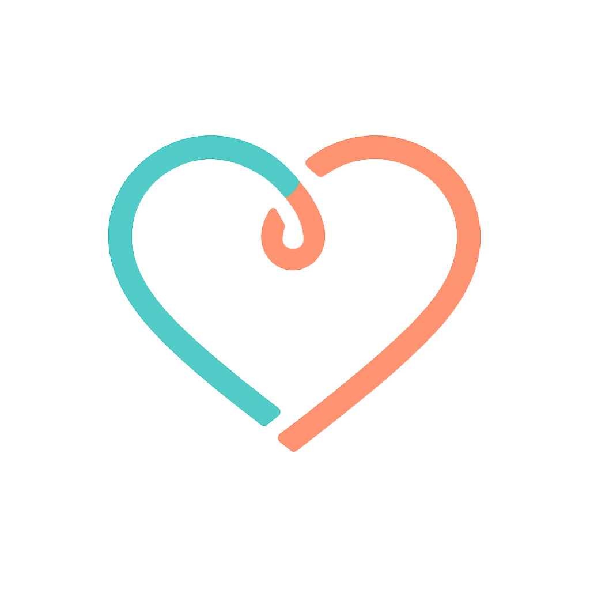

<!doctype html>
<html lang="en">
<head>
<meta charset="utf-8" />
<title>Emotion Buddy — Intro Video (v2)</title>
<link rel="preconnect" href="https://fonts.googleapis.com">
<link rel="preconnect" href="https://fonts.gstatic.com" crossorigin>
<link href="https://fonts.googleapis.com/css2?family=Fraunces:ital,opsz,wght@0,9..144,400;0,9..144,500;0,9..144,600;1,9..144,400;1,9..144,500&family=Inter:wght@400;500;600&family=Space+Mono:wght@400;700&family=Caveat:wght@400;500&display=swap" rel="stylesheet">
<script src="https://unpkg.com/react@18.3.1/umd/react.development.js" crossorigin="anonymous"></script>
<script src="https://unpkg.com/react-dom@18.3.1/umd/react-dom.development.js" crossorigin="anonymous"></script>
<script src="https://unpkg.com/@babel/standalone@7.29.0/babel.min.js" crossorigin="anonymous"></script>
<style>
  html, body { margin: 0; padding: 0; background: transparent; height: 100%; overflow: hidden; }
  body { font-family: "Inter", -apple-system, sans-serif; }
  #root { position: fixed; inset: 0; }
  /* Embed mode — hide the playback controls so the video reads as a hero clip, not a player */
  body.embed #root > div > div { background: transparent !important; }
  body.embed #root > div > div > *:nth-child(2) { display: none !important; }
  body.embed #root > div > div > *:first-child { flex: 1 1 100% !important; height: 100% !important; }
</style>
<script>
  // Activate embed layout when ?embed=1 is present (iframe integration on the website)
  if (window.location.search.includes('embed')) document.body.classList.add('embed');
</script>
</head>
<body>
<div id="root" data-screen-label="t=0s"></div>

<script type="text/babel">
/* ================== animations.jsx (inlined) ================== */

// animations.jsx
// Reusable animation starter: Stage, Timeline, Sprite, easing helpers.
// Usage (in an HTML file that loads React + Babel):
//
//   <Stage width={1280} height={720} duration={10} background="#f6f4ef">
//     <MyScene />
//   </Stage>
//
// Inside <Stage>, any child can call useTime() to read the current
// playhead (seconds). Or wrap content in <Sprite start={1} end={4}>...</Sprite>
// to only render during that window -- children receive a `localTime` and
// `progress` via the useSprite() hook.
//
// ─────────────────────────────────────────────────────────────────────────────

// ── Easing functions (hand-rolled, Popmotion-style) ─────────────────────────
// All easings take t ∈ [0,1] and return eased t ∈ [0,1] (may overshoot for back/elastic).
const Easing = {
  linear: (t) => t,

  // Quad
  easeInQuad:    (t) => t * t,
  easeOutQuad:   (t) => t * (2 - t),
  easeInOutQuad: (t) => (t < 0.5 ? 2 * t * t : -1 + (4 - 2 * t) * t),

  // Cubic
  easeInCubic:    (t) => t * t * t,
  easeOutCubic:   (t) => (--t) * t * t + 1,
  easeInOutCubic: (t) => (t < 0.5 ? 4 * t * t * t : (t - 1) * (2 * t - 2) * (2 * t - 2) + 1),

  // Quart
  easeInQuart:    (t) => t * t * t * t,
  easeOutQuart:   (t) => 1 - (--t) * t * t * t,
  easeInOutQuart: (t) => (t < 0.5 ? 8 * t * t * t * t : 1 - 8 * (--t) * t * t * t),

  // Expo
  easeInExpo:  (t) => (t === 0 ? 0 : Math.pow(2, 10 * (t - 1))),
  easeOutExpo: (t) => (t === 1 ? 1 : 1 - Math.pow(2, -10 * t)),
  easeInOutExpo: (t) => {
    if (t === 0) return 0;
    if (t === 1) return 1;
    if (t < 0.5) return 0.5 * Math.pow(2, 20 * t - 10);
    return 1 - 0.5 * Math.pow(2, -20 * t + 10);
  },

  // Sine
  easeInSine:    (t) => 1 - Math.cos((t * Math.PI) / 2),
  easeOutSine:   (t) => Math.sin((t * Math.PI) / 2),
  easeInOutSine: (t) => -(Math.cos(Math.PI * t) - 1) / 2,

  // Back (overshoot)
  easeOutBack: (t) => {
    const c1 = 1.70158, c3 = c1 + 1;
    return 1 + c3 * Math.pow(t - 1, 3) + c1 * Math.pow(t - 1, 2);
  },
  easeInBack: (t) => {
    const c1 = 1.70158, c3 = c1 + 1;
    return c3 * t * t * t - c1 * t * t;
  },
  easeInOutBack: (t) => {
    const c1 = 1.70158, c2 = c1 * 1.525;
    return t < 0.5
      ? (Math.pow(2 * t, 2) * ((c2 + 1) * 2 * t - c2)) / 2
      : (Math.pow(2 * t - 2, 2) * ((c2 + 1) * (t * 2 - 2) + c2) + 2) / 2;
  },

  // Elastic
  easeOutElastic: (t) => {
    const c4 = (2 * Math.PI) / 3;
    if (t === 0) return 0;
    if (t === 1) return 1;
    return Math.pow(2, -10 * t) * Math.sin((t * 10 - 0.75) * c4) + 1;
  },
};

// ── Core interpolation helpers ──────────────────────────────────────────────

// Clamp a value to [min, max]
const clamp = (v, min, max) => Math.max(min, Math.min(max, v));

// interpolate([0, 0.5, 1], [0, 100, 50], ease?) -> fn(t)
// Popmotion-style: linearly maps t across input keyframes to output values,
// with optional easing per segment (single fn or array of fns).
function interpolate(input, output, ease = Easing.linear) {
  return (t) => {
    if (t <= input[0]) return output[0];
    if (t >= input[input.length - 1]) return output[output.length - 1];
    for (let i = 0; i < input.length - 1; i++) {
      if (t >= input[i] && t <= input[i + 1]) {
        const span = input[i + 1] - input[i];
        const local = span === 0 ? 0 : (t - input[i]) / span;
        const easeFn = Array.isArray(ease) ? (ease[i] || Easing.linear) : ease;
        const eased = easeFn(local);
        return output[i] + (output[i + 1] - output[i]) * eased;
      }
    }
    return output[output.length - 1];
  };
}

// animate({from, to, start, end, ease})(t) — simpler single-segment tween.
// Returns `from` before `start`, `to` after `end`.
function animate({ from = 0, to = 1, start = 0, end = 1, ease = Easing.easeInOutCubic }) {
  return (t) => {
    if (t <= start) return from;
    if (t >= end) return to;
    const local = (t - start) / (end - start);
    return from + (to - from) * ease(local);
  };
}

// ── Timeline context ────────────────────────────────────────────────────────

const TimelineContext = React.createContext({ time: 0, duration: 10, playing: false });

const useTime = () => React.useContext(TimelineContext).time;
const useTimeline = () => React.useContext(TimelineContext);

// ── Sprite ──────────────────────────────────────────────────────────────────
// Renders children only when the playhead is inside [start, end]. Provides
// a sub-context with `localTime` (seconds since start) and `progress` (0..1).
//
//   <Sprite start={2} end={5}>
//     {({ localTime, progress }) => <Thing x={progress * 100} />}
//   </Sprite>
//
// Or as a plain wrapper — children can call useSprite() themselves.

const SpriteContext = React.createContext({ localTime: 0, progress: 0, duration: 0 });
const useSprite = () => React.useContext(SpriteContext);

function Sprite({ start = 0, end = Infinity, children, keepMounted = false }) {
  const { time } = useTimeline();
  const visible = time >= start && time <= end;
  if (!visible && !keepMounted) return null;

  const duration = end - start;
  const localTime = Math.max(0, time - start);
  const progress = duration > 0 && isFinite(duration)
    ? clamp(localTime / duration, 0, 1)
    : 0;

  const value = { localTime, progress, duration, visible };

  return (
    <SpriteContext.Provider value={value}>
      {typeof children === 'function' ? children(value) : children}
    </SpriteContext.Provider>
  );
}

// ── Sample sprite components ────────────────────────────────────────────────

// TextSprite: fades/slides text in on entry, holds, then fades out on exit.
// Props: text, x, y, size, color, font, entryDur, exitDur, align
function TextSprite({
  text,
  x = 0, y = 0,
  size = 48,
  color = '#111',
  font = 'Inter, system-ui, sans-serif',
  weight = 600,
  entryDur = 0.45,
  exitDur = 0.35,
  entryEase = Easing.easeOutBack,
  exitEase = Easing.easeInCubic,
  align = 'left',
  letterSpacing = '-0.01em',
}) {
  const { localTime, duration } = useSprite();
  const exitStart = Math.max(0, duration - exitDur);

  let opacity = 1;
  let ty = 0;

  if (localTime < entryDur) {
    const t = entryEase(clamp(localTime / entryDur, 0, 1));
    opacity = t;
    ty = (1 - t) * 16;
  } else if (localTime > exitStart) {
    const t = exitEase(clamp((localTime - exitStart) / exitDur, 0, 1));
    opacity = 1 - t;
    ty = -t * 8;
  }

  const translateX = align === 'center' ? '-50%' : align === 'right' ? '-100%' : '0';

  return (
    <div style={{
      position: 'absolute',
      left: x, top: y,
      transform: `translate(${translateX}, ${ty}px)`,
      opacity,
      fontFamily: font,
      fontSize: size,
      fontWeight: weight,
      color,
      letterSpacing,
      whiteSpace: 'pre',
      lineHeight: 1.1,
      willChange: 'transform, opacity',
    }}>
      {text}
    </div>
  );
}

// ImageSprite: scales + fades in; optional Ken Burns drift during hold.
function ImageSprite({
  src,
  x = 0, y = 0,
  width = 400, height = 300,
  entryDur = 0.6,
  exitDur = 0.4,
  kenBurns = false,
  kenBurnsScale = 1.08,
  radius = 12,
  fit = 'cover',
  placeholder = null, // {label: string} for striped placeholder
}) {
  const { localTime, duration } = useSprite();
  const exitStart = Math.max(0, duration - exitDur);

  let opacity = 1;
  let scale = 1;

  if (localTime < entryDur) {
    const t = Easing.easeOutCubic(clamp(localTime / entryDur, 0, 1));
    opacity = t;
    scale = 0.96 + 0.04 * t;
  } else if (localTime > exitStart) {
    const t = Easing.easeInCubic(clamp((localTime - exitStart) / exitDur, 0, 1));
    opacity = 1 - t;
    scale = (kenBurns ? kenBurnsScale : 1) + 0.02 * t;
  } else if (kenBurns) {
    const holdSpan = exitStart - entryDur;
    const holdT = holdSpan > 0 ? (localTime - entryDur) / holdSpan : 0;
    scale = 1 + (kenBurnsScale - 1) * holdT;
  }

  const content = placeholder ? (
    <div style={{
      width: '100%', height: '100%',
      display: 'flex', alignItems: 'center', justifyContent: 'center',
      background: 'repeating-linear-gradient(135deg, #e9e6df 0 10px, #dcd8cf 10px 20px)',
      color: '#6b6458',
      fontFamily: 'JetBrains Mono, ui-monospace, monospace',
      fontSize: 13,
      letterSpacing: '0.04em',
      textTransform: 'uppercase',
    }}>
      {placeholder.label || 'image'}
    </div>
  ) : (
    
  );

  return (
    <div style={{
      position: 'absolute',
      left: x, top: y,
      width, height,
      opacity,
      transform: `scale(${scale})`,
      transformOrigin: 'center',
      borderRadius: radius,
      overflow: 'hidden',
      willChange: 'transform, opacity',
    }}>
      {content}
    </div>
  );
}

// RectSprite: simple rectangle that animates position/size/color via props.
// Useful demo primitive — takes a `render` fn for per-frame customization.
function RectSprite({
  x = 0, y = 0,
  width = 100, height = 100,
  color = '#111',
  radius = 8,
  entryDur = 0.4,
  exitDur = 0.3,
  render, // optional: (ctx) => style overrides
}) {
  const spriteCtx = useSprite();
  const { localTime, duration } = spriteCtx;
  const exitStart = Math.max(0, duration - exitDur);

  let opacity = 1;
  let scale = 1;

  if (localTime < entryDur) {
    const t = Easing.easeOutBack(clamp(localTime / entryDur, 0, 1));
    opacity = clamp(localTime / entryDur, 0, 1);
    scale = 0.4 + 0.6 * t;
  } else if (localTime > exitStart) {
    const t = Easing.easeInQuad(clamp((localTime - exitStart) / exitDur, 0, 1));
    opacity = 1 - t;
    scale = 1 - 0.15 * t;
  }

  const overrides = render ? render(spriteCtx) : {};

  return (
    <div style={{
      position: 'absolute',
      left: x, top: y,
      width, height,
      background: color,
      borderRadius: radius,
      opacity,
      transform: `scale(${scale})`,
      transformOrigin: 'center',
      willChange: 'transform, opacity',
      ...overrides,
    }} />
  );
}


function Stage({
  width = 1280,
  height = 720,
  duration = 10,
  background = '#f6f4ef',
  fps = 60,
  loop = true,
  autoplay = true,
  persistKey = 'animstage',
  children,
}) {
  const [time, setTime] = React.useState(() => {
    try {
      const v = parseFloat(localStorage.getItem(persistKey + ':t') || '0');
      return isFinite(v) ? clamp(v, 0, duration) : 0;
    } catch { return 0; }
  });
  const [playing, setPlaying] = React.useState(autoplay);
  const [hoverTime, setHoverTime] = React.useState(null);
  const [scale, setScale] = React.useState(1);

  const stageRef = React.useRef(null);
  const canvasRef = React.useRef(null);
  const rafRef = React.useRef(null);
  const lastTsRef = React.useRef(null);

  // Persist playhead
  React.useEffect(() => {
    try { localStorage.setItem(persistKey + ':t', String(time)); } catch {}
  }, [time, persistKey]);

  // Auto-scale to fit viewport
  React.useEffect(() => {
    if (!stageRef.current) return;
    const el = stageRef.current;
    const measure = () => {
      const barH = 44; // playback bar height
      const s = Math.min(
        el.clientWidth / width,
        (el.clientHeight - barH) / height
      );
      setScale(Math.max(0.05, s));
    };
    measure();
    const ro = new ResizeObserver(measure);
    ro.observe(el);
    window.addEventListener('resize', measure);
    return () => {
      ro.disconnect();
      window.removeEventListener('resize', measure);
    };
  }, [width, height]);

  // Animation loop
  React.useEffect(() => {
    if (!playing) {
      lastTsRef.current = null;
      return;
    }
    const step = (ts) => {
      if (lastTsRef.current == null) lastTsRef.current = ts;
      const dt = (ts - lastTsRef.current) / 1000;
      lastTsRef.current = ts;
      setTime((t) => {
        let next = t + dt;
        if (next >= duration) {
          if (loop) next = next % duration;
          else { next = duration; setPlaying(false); }
        }
        return next;
      });
      rafRef.current = requestAnimationFrame(step);
    };
    rafRef.current = requestAnimationFrame(step);
    return () => {
      if (rafRef.current) cancelAnimationFrame(rafRef.current);
      lastTsRef.current = null;
    };
  }, [playing, duration, loop]);

  // Keyboard: space = play/pause, ← → = seek
  React.useEffect(() => {
    const onKey = (e) => {
      if (e.target && (e.target.tagName === 'INPUT' || e.target.tagName === 'TEXTAREA')) return;
      if (e.code === 'Space') {
        e.preventDefault();
        setPlaying(p => !p);
      } else if (e.code === 'ArrowLeft') {
        setTime(t => clamp(t - (e.shiftKey ? 1 : 0.1), 0, duration));
      } else if (e.code === 'ArrowRight') {
        setTime(t => clamp(t + (e.shiftKey ? 1 : 0.1), 0, duration));
      } else if (e.key === '0' || e.code === 'Home') {
        setTime(0);
      }
    };
    window.addEventListener('keydown', onKey);
    return () => window.removeEventListener('keydown', onKey);
  }, [duration]);

  const displayTime = hoverTime != null ? hoverTime : time;

  const ctxValue = React.useMemo(
    () => ({ time: displayTime, duration, playing, setTime, setPlaying }),
    [displayTime, duration, playing]
  );

  return (
    <div
      ref={stageRef}
      style={{
        position: 'absolute', inset: 0,
        display: 'flex', flexDirection: 'column',
        alignItems: 'center',
        background: '#0a0a0a',
        fontFamily: 'Inter, system-ui, sans-serif',
      }}
    >
      {/* Canvas area — vertically centered in remaining space */}
      <div style={{
        flex: 1,
        width: '100%',
        display: 'flex', alignItems: 'center', justifyContent: 'center',
        overflow: 'hidden',
        minHeight: 0,
      }}>
        <div
          ref={canvasRef}
          style={{
            width, height,
            background,
            position: 'relative',
            transform: `scale(${scale})`,
            transformOrigin: 'center',
            flexShrink: 0,
            boxShadow: '0 20px 60px rgba(0,0,0,0.4)',
            overflow: 'hidden',
          }}
        >
          <TimelineContext.Provider value={ctxValue}>
            {children}
          </TimelineContext.Provider>
        </div>
      </div>

      {/* Playback bar — stacked below canvas, never overlapping */}
      <PlaybackBar
        time={displayTime}
        actualTime={time}
        duration={duration}
        playing={playing}
        onPlayPause={() => setPlaying(p => !p)}
        onReset={() => { setTime(0); }}
        onSeek={(t) => setTime(t)}
        onHover={(t) => setHoverTime(t)}
      />
    </div>
  );
}

// ── Playback bar ────────────────────────────────────────────────────────────
// Play/pause, return-to-begin, scrub track, time display.
// Uses fixed-width time fields so layout doesn't thrash.

function PlaybackBar({ time, duration, playing, onPlayPause, onReset, onSeek, onHover }) {
  const trackRef = React.useRef(null);
  const [dragging, setDragging] = React.useState(false);

  const timeFromEvent = React.useCallback((e) => {
    const rect = trackRef.current.getBoundingClientRect();
    const x = clamp((e.clientX - rect.left) / rect.width, 0, 1);
    return x * duration;
  }, [duration]);

  const onTrackMove = (e) => {
    if (!trackRef.current) return;
    const t = timeFromEvent(e);
    if (dragging) {
      onSeek(t);
    } else {
      onHover(t);
    }
  };

  const onTrackLeave = () => {
    if (!dragging) onHover(null);
  };

  const onTrackDown = (e) => {
    setDragging(true);
    const t = timeFromEvent(e);
    onSeek(t);
    onHover(null);
  };

  React.useEffect(() => {
    if (!dragging) return;
    const onUp = () => setDragging(false);
    const onMove = (e) => {
      if (!trackRef.current) return;
      const t = timeFromEvent(e);
      onSeek(t);
    };
    window.addEventListener('mouseup', onUp);
    window.addEventListener('mousemove', onMove);
    return () => {
      window.removeEventListener('mouseup', onUp);
      window.removeEventListener('mousemove', onMove);
    };
  }, [dragging, timeFromEvent, onSeek]);

  const pct = duration > 0 ? (time / duration) * 100 : 0;
  const fmt = (t) => {
    const total = Math.max(0, t);
    const m = Math.floor(total / 60);
    const s = Math.floor(total % 60);
    const cs = Math.floor((total * 100) % 100);
    return `${String(m).padStart(1, '0')}:${String(s).padStart(2, '0')}.${String(cs).padStart(2, '0')}`;
  };

  const mono = 'JetBrains Mono, ui-monospace, SFMono-Regular, monospace';

  return (
    <div style={{
      display: 'flex', alignItems: 'center', gap: 12,
      padding: '8px 16px',
      background: 'rgba(20,20,20,0.92)',
      borderTop: '1px solid rgba(255,255,255,0.08)',
      width: '100%',
      maxWidth: 680,
      alignSelf: 'center',

      borderRadius: 8,
      color: '#f6f4ef',
      fontFamily: 'Inter, system-ui, sans-serif',
      userSelect: 'none',
      flexShrink: 0,
    }}>
      <IconButton onClick={onReset} title="Return to start (0)">
        <svg width="14" height="14" viewBox="0 0 14 14" fill="none">
          <path d="M3 2v10M12 2L5 7l7 5V2z" stroke="currentColor" strokeWidth="1.5" strokeLinejoin="round" strokeLinecap="round"/>
        </svg>
      </IconButton>
      <IconButton onClick={onPlayPause} title="Play/pause (space)">
        {playing ? (
          <svg width="14" height="14" viewBox="0 0 14 14" fill="none">
            <rect x="3" y="2" width="3" height="10" fill="currentColor"/>
            <rect x="8" y="2" width="3" height="10" fill="currentColor"/>
          </svg>
        ) : (
          <svg width="14" height="14" viewBox="0 0 14 14" fill="none">
            <path d="M3 2l9 5-9 5V2z" fill="currentColor"/>
          </svg>
        )}
      </IconButton>

      {/* Current time: fixed width so it doesn't thrash */}
      <div style={{
        fontFamily: mono,
        fontSize: 12,
        fontVariantNumeric: 'tabular-nums',
        width: 64, textAlign: 'right',
        color: '#f6f4ef',
      }}>
        {fmt(time)}
      </div>

      {/* Scrub track */}
      <div
        ref={trackRef}
        onMouseMove={onTrackMove}
        onMouseLeave={onTrackLeave}
        onMouseDown={onTrackDown}
        style={{
          flex: 1,
          height: 22,
          position: 'relative',
          cursor: 'pointer',
          display: 'flex', alignItems: 'center',
        }}
      >
        <div style={{
          position: 'absolute',
          left: 0, right: 0, height: 4,
          background: 'rgba(255,255,255,0.12)',
          borderRadius: 2,
        }}/>
        <div style={{
          position: 'absolute',
          left: 0, width: `${pct}%`, height: 4,
          background: 'oklch(72% 0.12 250)',
          borderRadius: 2,
        }}/>
        <div style={{
          position: 'absolute',
          left: `${pct}%`, top: '50%',
          width: 12, height: 12,
          marginLeft: -6, marginTop: -6,
          background: '#fff',
          borderRadius: 6,
          boxShadow: '0 2px 4px rgba(0,0,0,0.4)',
        }}/>
      </div>

      {/* Duration: fixed width */}
      <div style={{
        fontFamily: mono,
        fontSize: 12,
        fontVariantNumeric: 'tabular-nums',
        width: 64, textAlign: 'left',
        color: 'rgba(246,244,239,0.55)',
      }}>
        {fmt(duration)}
      </div>
    </div>
  );
}

function IconButton({ children, onClick, title }) {
  const [hover, setHover] = React.useState(false);
  return (
    <button
      onClick={onClick}
      title={title}
      onMouseEnter={() => setHover(true)}
      onMouseLeave={() => setHover(false)}
      style={{
        width: 28, height: 28,
        display: 'flex', alignItems: 'center', justifyContent: 'center',
        background: hover ? 'rgba(255,255,255,0.12)' : 'rgba(255,255,255,0.04)',
        border: '1px solid rgba(255,255,255,0.1)',
        borderRadius: 6,
        color: '#f6f4ef',
        cursor: 'pointer',
        padding: 0,
        transition: 'background 120ms',
      }}
    >
      {children}
    </button>
  );
}


Object.assign(window, {
  Easing, interpolate, animate, clamp,
  TimelineContext, useTime, useTimeline,
  Sprite, SpriteContext, useSprite,
  TextSprite, ImageSprite, RectSprite,
  Stage, PlaybackBar,
});

/* ================== scenes.jsx (inlined) ================== */
// scenes.jsx — Emotion Buddy intro video scenes

const FR = '"Fraunces", Georgia, serif';
const IN = '"Inter", -apple-system, sans-serif';
const MN = '"Space Mono", ui-monospace, monospace';
const CV = '"Caveat", cursive';

const COLOR = {
  canvas: '#F6F1E8',
  ink: '#1B1A17',
  ink2: '#3A362F',
  ink3: '#6B6458',
  ink4: '#9A9386',
  rule: '#D9D1BE',
  sky: '#5FB3D9',
  coral: '#F26D4E',
  rose: '#E98BA6',
  lavender: '#B987DC',
  teal: '#4FC3B2',
};

// ── Paper texture + grain overlay ────────────────────────────────
function Paper({ children }) {
  return (
    <div style={{
      position: 'absolute', inset: 0,
      background: `
        radial-gradient(1400px 900px at 68% 32%, rgba(137,207,240,0.10), transparent 60%),
        radial-gradient(1200px 800px at 18% 78%, rgba(233,139,166,0.08), transparent 60%),
        ${COLOR.canvas}
      `,
    }}>
      {/* subtle paper grain */}
      <div style={{
        position: 'absolute', inset: 0, opacity: 0.35, mixBlendMode: 'multiply',
        backgroundImage: `url("data:image/svg+xml,%3Csvg xmlns='http://www.w3.org/2000/svg' width='200' height='200'%3E%3Cfilter id='n'%3E%3CfeTurbulence type='fractalNoise' baseFrequency='0.85' numOctaves='2' seed='4'/%3E%3CfeColorMatrix values='0 0 0 0 0.18 0 0 0 0 0.15 0 0 0 0 0.10 0 0 0 0.18 0'/%3E%3C/filter%3E%3Crect width='100%25' height='100%25' filter='url(%23n)'/%3E%3C/svg%3E")`,
        pointerEvents: 'none',
      }}/>
      {/* vignette */}
      <div style={{
        position: 'absolute', inset: 0, pointerEvents: 'none',
        background: 'radial-gradient(1200px 800px at 50% 50%, transparent 60%, rgba(27,26,23,0.18))',
      }}/>
      {children}
    </div>
  );
}

// ── Scene 1 — blank page · Tuesday 7:43pm · cursor blink ─────────
function Scene1_BlankPage({ start, end }) {
  return (
    <Sprite start={start} end={end}>
      {({ localTime, duration, progress }) => {
        const fadeIn = Easing.easeOutCubic(clamp(localTime / 0.8, 0, 1));
        const fadeOut = localTime > duration - 0.8
          ? Easing.easeInCubic(clamp((localTime - (duration - 0.8)) / 0.8, 0, 1))
          : 0;
        const alpha = fadeIn * (1 - fadeOut);
        const cursorOn = Math.floor(localTime * 1.6) % 2 === 0;
        const zoom = 1 + progress * 0.04;

        return (
          <div style={{ position: 'absolute', inset: 0, opacity: alpha,
            transform: `scale(${zoom})`, transformOrigin: '50% 55%' }}>
            {/* date stamp */}
            <div style={{
              position: 'absolute', top: 120, left: 160,
              fontFamily: MN, fontSize: 18, letterSpacing: '0.18em',
              color: COLOR.ink4, textTransform: 'uppercase',
            }}>
              Tuesday · 7:43 pm
            </div>
            {/* ruled lines */}
            <div style={{
              position: 'absolute', left: 160, right: 160, top: 220, bottom: 160,
              background: 'repeating-linear-gradient(to bottom, transparent 0 71px, rgba(27,26,23,0.08) 71px 72px)',
            }}/>
            {/* margin rule */}
            <div style={{
              position: 'absolute', left: 280, top: 180, bottom: 140,
              width: 1, background: 'rgba(242,109,78,0.30)',
            }}/>
            {/* prompt */}
            <div style={{
              position: 'absolute', left: 320, top: 304,
              fontFamily: FR, fontStyle: 'italic', fontSize: 36, color: COLOR.ink3,
              opacity: clamp((localTime - 0.4) / 0.8, 0, 1),
            }}>
              How are you feeling?
            </div>
            {/* cursor */}
            <div style={{
              position: 'absolute', left: 320, top: 390, width: 3, height: 44,
              background: COLOR.ink, opacity: cursorOn ? 0.85 : 0,
              transition: 'opacity 80ms',
            }}/>
          </div>
        );
      }}
    </Sprite>
  );
}

// ── Scene 2 — the small words being typed, one at a time ─────────
// Each word types in, pauses, then drifts up/away to join the "constellation"
function Scene2_TypedWords({ start, end }) {
  const words = [
    { text: 'tired',   x: 320, y: 390, when: 0.0, driftX: 140,  driftY: -260, color: COLOR.ink },
    { text: 'fine.',   x: 320, y: 390, when: 1.0, driftX: 480,  driftY: -180, color: COLOR.ink2 },
    { text: 'missing', x: 320, y: 390, when: 2.0, driftX: -50,  driftY: -340, color: COLOR.ink },
    { text: 'okay',    x: 320, y: 390, when: 3.0, driftX: 820,  driftY: -120, color: COLOR.ink2 },
  ];

  return (
    <Sprite start={start} end={end}>
      {({ localTime, duration }) => {
        const fadeOut = localTime > duration - 0.6
          ? Easing.easeInCubic(clamp((localTime - (duration - 0.6)) / 0.6, 0, 1))
          : 0;
        const globalAlpha = 1 - fadeOut;

        return (
          <div style={{ position: 'absolute', inset: 0, opacity: globalAlpha }}>
            {/* date stamp persists */}
            <div style={{
              position: 'absolute', top: 120, left: 160,
              fontFamily: MN, fontSize: 18, letterSpacing: '0.18em',
              color: COLOR.ink4, textTransform: 'uppercase',
            }}>
              Tuesday · 7:43 pm
            </div>
            {/* ruled lines */}
            <div style={{
              position: 'absolute', left: 160, right: 160, top: 220, bottom: 160,
              background: 'repeating-linear-gradient(to bottom, transparent 0 71px, rgba(27,26,23,0.08) 71px 72px)',
            }}/>
            <div style={{
              position: 'absolute', left: 280, top: 180, bottom: 140,
              width: 1, background: 'rgba(242,109,78,0.30)',
            }}/>
            <div style={{
              position: 'absolute', left: 320, top: 304,
              fontFamily: FR, fontStyle: 'italic', fontSize: 36, color: COLOR.ink3,
              opacity: clamp(1 - localTime / 0.4, 0, 1),
            }}>
              How are you feeling?
            </div>

            {words.map((w, i) => {
              const t = localTime - w.when;
              if (t < 0) return null;
              // type in over 0.35s
              const typeT = clamp(t / 0.35, 0, 1);
              const chars = Math.ceil(w.text.length * typeT);
              const displayText = w.text.slice(0, chars);

              // hold for 0.35s, then drift up over 0.6s
              const driftT = clamp((t - 0.55) / 0.9, 0, 1);
              const drifted = driftT > 0;
              const ease = Easing.easeInOutCubic(driftT);
              const dx = w.driftX * ease;
              const dy = w.driftY * ease;
              const scale = 1 - driftT * 0.35;
              const opacity = drifted ? (1 - driftT * 0.55) : 1;
              const rot = driftT * (i % 2 === 0 ? -3 : 4);

              // cursor just after the word while active
              const isActive = t < 0.95;
              const cursorOn = isActive && Math.floor(t * 6) % 2 === 0;

              return (
                <React.Fragment key={i}>
                  <div style={{
                    position: 'absolute', left: w.x, top: w.y,
                    fontFamily: FR, fontWeight: 500, fontSize: 56,
                    color: w.color, opacity,
                    letterSpacing: '-0.01em',
                    transform: `translate(${dx}px, ${dy}px) scale(${scale}) rotate(${rot}deg)`,
                    transformOrigin: '0 50%',
                  }}>
                    {displayText}
                  </div>
                  {cursorOn && (
                    <div style={{
                      position: 'absolute',
                      left: w.x + chars * 28 + 6, top: w.y + 6,
                      width: 3, height: 44, background: COLOR.ink,
                    }}/>
                  )}
                </React.Fragment>
              );
            })}
          </div>
        );
      }}
    </Sprite>
  );
}

// ── Scene 3 — the constellation · zoom out · many days, many words
function Scene3_Constellation({ start, end }) {
  // A field of tiny fragments across pseudo-calendar cells
  const fragments = [
    // row 1 — older
    { t: 'tired',      x: 180,  y: 180, s: 28, c: COLOR.ink3, d: 'M 14' },
    { t: 'stuck',      x: 360,  y: 220, s: 34, c: COLOR.ink2, d: 'T 15' },
    { t: 'fine.',      x: 560,  y: 190, s: 26, c: COLOR.ink4, d: 'W 16' },
    { t: 'okay',       x: 740,  y: 230, s: 30, c: COLOR.ink3, d: 'T 17' },
    { t: 'heavy',      x: 920,  y: 200, s: 32, c: COLOR.ink2, d: 'F 18' },
    { t: 'tired',      x: 1110, y: 235, s: 30, c: COLOR.coral, d: 'S 19', highlight: true },
    { t: 'light',      x: 1300, y: 200, s: 28, c: COLOR.ink3, d: 'S 20' },
    { t: 'tired',      x: 1490, y: 230, s: 30, c: COLOR.coral, d: 'M 21', highlight: true },
    { t: 'slow',       x: 1680, y: 200, s: 28, c: COLOR.ink3, d: 'T 22' },

    // row 2
    { t: 'fine.',      x: 180,  y: 370, s: 26, c: COLOR.ink4, d: 'W 23' },
    { t: 'tired',      x: 360,  y: 410, s: 32, c: COLOR.coral, d: 'T 24', highlight: true },
    { t: 'uneven',     x: 560,  y: 380, s: 28, c: COLOR.ink3, d: 'F 25' },
    { t: 'okay',       x: 740,  y: 420, s: 30, c: COLOR.ink3, d: 'S 26' },
    { t: 'tired',      x: 920,  y: 390, s: 34, c: COLOR.coral, d: 'S 27', highlight: true },
    { t: 'stuck',      x: 1110, y: 425, s: 30, c: COLOR.ink2, d: 'M 28' },
    { t: 'quiet',      x: 1300, y: 390, s: 28, c: COLOR.ink3, d: 'T 29' },
    { t: 'tired',      x: 1490, y: 420, s: 30, c: COLOR.coral, d: 'W 30', highlight: true },
    { t: 'heavy',      x: 1680, y: 390, s: 28, c: COLOR.ink3, d: 'T 01' },

    // row 3
    { t: 'tired',      x: 180,  y: 560, s: 30, c: COLOR.coral, d: 'F 02', highlight: true },
    { t: 'fine.',      x: 360,  y: 600, s: 26, c: COLOR.ink4, d: 'S 03' },
    { t: 'okay',       x: 560,  y: 570, s: 30, c: COLOR.ink3, d: 'S 04' },
    { t: 'tired',      x: 740,  y: 610, s: 32, c: COLOR.coral, d: 'M 05', highlight: true },
    { t: 'stuck',      x: 920,  y: 580, s: 30, c: COLOR.ink2, d: 'T 06' },
    { t: 'calm',       x: 1110, y: 615, s: 28, c: COLOR.ink3, d: 'W 07' },
    { t: 'tired',      x: 1300, y: 580, s: 30, c: COLOR.coral, d: 'T 08', highlight: true },
    { t: 'quiet',      x: 1490, y: 610, s: 28, c: COLOR.ink3, d: 'F 09' },
    { t: 'fine.',      x: 1680, y: 580, s: 26, c: COLOR.ink4, d: 'S 10' },

    // row 4
    { t: 'heavy',      x: 180,  y: 750, s: 30, c: COLOR.ink2, d: 'S 11' },
    { t: 'slow',       x: 360,  y: 790, s: 28, c: COLOR.ink3, d: 'M 12' },
    { t: 'tired',      x: 560,  y: 760, s: 32, c: COLOR.coral, d: 'T 13', highlight: true },
    { t: 'okay',       x: 740,  y: 800, s: 30, c: COLOR.ink3, d: 'W 14' },
    { t: 'stuck',      x: 920,  y: 770, s: 30, c: COLOR.ink2, d: 'T 15' },
    { t: 'tired',      x: 1110, y: 805, s: 32, c: COLOR.coral, d: 'F 16', highlight: true },
    { t: 'light',      x: 1300, y: 770, s: 28, c: COLOR.ink3, d: 'S 17' },
    { t: 'tired',      x: 1490, y: 800, s: 30, c: COLOR.coral, d: 'S 18', highlight: true },
    { t: 'fine.',      x: 1680, y: 770, s: 26, c: COLOR.ink4, d: 'M 19' },
  ];

  return (
    <Sprite start={start} end={end}>
      {({ localTime, duration }) => {
        const fadeIn = Easing.easeOutCubic(clamp(localTime / 0.8, 0, 1));
        const fadeOut = localTime > duration - 0.8
          ? Easing.easeInCubic(clamp((localTime - (duration - 0.8)) / 0.8, 0, 1))
          : 0;
        const alpha = fadeIn * (1 - fadeOut);

        // Camera: starts zoomed in at center ("we just came from the notebook"),
        // pulls out to see the whole field.
        const camProgress = Easing.easeInOutCubic(clamp(localTime / 2.4, 0, 1));
        const camScale = interpolate([0, 1], [1.6, 1.0])(camProgress);
        const camY = interpolate([0, 1], [80, 0])(camProgress);

        // after ~2.4s, highlights pulse on as the "pattern" is revealed
        const highlightReveal = clamp((localTime - 2.0) / 1.2, 0, 1);

        return (
          <div style={{
            position: 'absolute', inset: 0, opacity: alpha,
            transform: `scale(${camScale}) translateY(${camY}px)`,
            transformOrigin: '50% 50%',
          }}>
            {/* calendar grid faint */}
            <svg width="1920" height="1080" style={{ position: 'absolute', inset: 0 }}>
              {[0, 1, 2, 3].map(r =>
                [0, 1, 2, 3, 4, 5, 6, 7, 8].map(c => (
                  <rect key={`${r}-${c}`}
                    x={100 + c * 200} y={100 + r * 190}
                    width={180} height={170}
                    fill="none" stroke="rgba(27,26,23,0.06)" strokeWidth="1"
                  />
                ))
              )}
            </svg>

            {fragments.map((f, i) => {
              // stagger appearance
              const appearAt = 0.2 + (i % 9) * 0.05 + Math.floor(i / 9) * 0.15;
              const t = clamp((localTime - appearAt) / 0.6, 0, 1);
              const eased = Easing.easeOutCubic(t);
              const opacity = eased * (f.highlight ? (0.5 + highlightReveal * 0.5) : 0.85);
              const ty = (1 - eased) * 8;
              const pulse = f.highlight
                ? 1 + 0.08 * Math.sin(localTime * 3 + i) * highlightReveal
                : 1;

              return (
                <React.Fragment key={i}>
                  {/* day label */}
                  <div style={{
                    position: 'absolute', left: f.x - 6, top: f.y - 40,
                    fontFamily: MN, fontSize: 11, letterSpacing: '0.12em',
                    color: COLOR.ink4, textTransform: 'uppercase',
                    opacity: opacity * 0.6,
                  }}>
                    {f.d}
                  </div>
                  {/* underline ring for highlighted */}
                  {f.highlight && (
                    <div style={{
                      position: 'absolute',
                      left: f.x - 12, top: f.y - 6,
                      width: f.t.length * f.s * 0.55 + 24,
                      height: f.s * 1.35,
                      borderRadius: 999,
                      background: 'rgba(242,109,78,0.12)',
                      opacity: highlightReveal,
                      transform: `scale(${pulse})`,
                      transformOrigin: 'center',
                    }}/>
                  )}
                  <div style={{
                    position: 'absolute', left: f.x, top: f.y,
                    fontFamily: FR, fontWeight: 500, fontSize: f.s, color: f.c,
                    letterSpacing: '-0.01em', opacity,
                    transform: `translateY(${ty}px)`,
                  }}>
                    {f.t}
                  </div>
                </React.Fragment>
              );
            })}
          </div>
        );
      }}
    </Sprite>
  );
}

// ── Scene 4 — the gentle observation · line sweeps, words settle ──
function Scene4_Observation({ start, end }) {
  return (
    <Sprite start={start} end={end}>
      {({ localTime, duration }) => {
        const fadeIn = Easing.easeOutCubic(clamp(localTime / 0.8, 0, 1));
        const fadeOut = localTime > duration - 0.8
          ? Easing.easeInCubic(clamp((localTime - (duration - 0.8)) / 0.8, 0, 1))
          : 0;
        const alpha = fadeIn * (1 - fadeOut);

        // Line 1 builds word by word
        const line1 = [
          { w: 'We', t: 0.1 },
          { w: 'noticed', t: 0.25 },
          { w: 'you\u2019ve', t: 0.55 },
          { w: 'written', t: 0.8 },
        ];
        const line2 = [
          { w: '\u201Ctired\u201D', t: 1.1, accent: true },
          { w: 'eleven', t: 1.5, accent2: true },
          { w: 'times', t: 1.8 },
          { w: 'this', t: 2.1 },
          { w: 'month.', t: 2.3 },
        ];

        const afterline = localTime - 3.0;
        const subIn = clamp(afterline / 0.8, 0, 1);
        const subAlpha = Easing.easeOutCubic(subIn);

        return (
          <div style={{ position: 'absolute', inset: 0, opacity: alpha }}>
            {/* soft coral wash growing */}
            <div style={{
              position: 'absolute', inset: 0,
              background: `radial-gradient(1400px 1000px at 50% 55%, rgba(242,109,78,${0.05 + clamp(localTime / 3, 0, 1) * 0.05}), transparent 65%)`,
            }}/>

            {/* top label */}
            <div style={{
              position: 'absolute', top: 180, left: 0, right: 0, textAlign: 'center',
              fontFamily: MN, fontSize: 20, letterSpacing: '0.18em',
              color: COLOR.ink4, textTransform: 'uppercase',
              opacity: clamp(localTime / 0.6, 0, 1),
            }}>
              — a small observation —
            </div>

            {/* Line 1 */}
            <Line words={line1} localTime={localTime} y={380} size={96} />
            {/* Line 2 */}
            <Line words={line2} localTime={localTime} y={520} size={96} />

            {/* subtitle */}
            <div style={{
              position: 'absolute', top: 760, left: 0, right: 0, textAlign: 'center',
              fontFamily: FR, fontStyle: 'italic', fontWeight: 400,
              fontSize: 42, color: COLOR.ink3, letterSpacing: '-0.005em',
              opacity: subAlpha,
              transform: `translateY(${(1 - subAlpha) * 16}px)`,
            }}>
              Not in a streak. Across scattered Tuesdays.
            </div>
          </div>
        );
      }}
    </Sprite>
  );
}

function Line({ words, localTime, y, size }) {
  return (
    <div style={{
      position: 'absolute', top: y, left: 0, right: 0,
      display: 'flex', justifyContent: 'center', alignItems: 'baseline',
      fontFamily: FR, fontWeight: 500, fontSize: size, color: COLOR.ink,
      letterSpacing: '-0.015em', lineHeight: 1.05,
    }}>
      {words.map((w, i) => {
        const t = clamp((localTime - w.t) / 0.5, 0, 1);
        const eased = Easing.easeOutCubic(t);
        const color = w.accent ? COLOR.coral : w.accent2 ? COLOR.ink : COLOR.ink;
        return (
          <span key={i} style={{
            display: 'inline-block',
            padding: '0 14px',
            position: 'relative',
          }}>
            <span style={{
              display: 'inline-block',
              opacity: eased,
              transform: `translateY(${(1 - eased) * 18}px)`,
              color,
              fontStyle: w.accent ? 'italic' : 'normal',
              position: 'relative',
            }}>
              {w.w}
              {w.accent2 && (
                <span style={{
                  position: 'absolute', left: -4, right: -4, bottom: -2, height: 6,
                  background: 'rgba(95,179,217,0.45)',
                  opacity: clamp((localTime - w.t - 0.3) / 0.4, 0, 1),
                  borderRadius: 3,
                }}/>
              )}
            </span>
          </span>
        );
      })}
    </div>
  );
}

// ── Scene 5 — phone rises up, app reads it back ──────────────────
function Scene5_Phone({ start, end }) {
  return (
    <Sprite start={start} end={end}>
      {({ localTime, duration }) => {
        const fadeIn = Easing.easeOutCubic(clamp(localTime / 0.8, 0, 1));
        const fadeOut = localTime > duration - 0.6
          ? Easing.easeInCubic(clamp((localTime - (duration - 0.6)) / 0.6, 0, 1))
          : 0;
        const alpha = fadeIn * (1 - fadeOut);

        // Phone rises from bottom
        const riseT = Easing.easeOutCubic(clamp(localTime / 1.2, 0, 1));
        const ty = (1 - riseT) * 400;

        // gentle breath
        const breath = 1 + Math.sin(localTime * 1.1) * 0.004;

        return (
          <div style={{ position: 'absolute', inset: 0, opacity: alpha }}>
            {/* soft sky wash behind */}
            <div style={{
              position: 'absolute', inset: 0,
              background: 'radial-gradient(900px 700px at 50% 40%, rgba(95,179,217,0.16), transparent 60%)',
            }}/>

            {/* left caption */}
            <div style={{
              position: 'absolute', left: 180, top: 360, width: 500,
              opacity: clamp((localTime - 0.6) / 0.8, 0, 1),
              transform: `translateY(${(1 - clamp((localTime - 0.6) / 0.8, 0, 1)) * 20}px)`,
            }}>
              <div style={{
                fontFamily: MN, fontSize: 18, letterSpacing: '0.18em',
                color: COLOR.ink4, textTransform: 'uppercase', marginBottom: 28,
              }}>
                So on Sunday morning —
              </div>
              <div style={{
                fontFamily: FR, fontWeight: 500, fontSize: 72, color: COLOR.ink,
                lineHeight: 1.05, letterSpacing: '-0.02em',
              }}>
                your notebook<br/>
                <span style={{ fontStyle: 'italic', fontWeight: 400, color: COLOR.coral }}>reads it back</span>
                <br/>to you.
              </div>
            </div>

            {/* phone frame */}
            <div style={{
              position: 'absolute', right: 240, top: 120, bottom: 60,
              display: 'flex', alignItems: 'center',
              transform: `translateY(${ty}px) scale(${breath})`,
              transformOrigin: 'bottom center',
            }}>
              <PhoneMock localTime={localTime} />
            </div>
          </div>
        );
      }}
    </Sprite>
  );
}

function PhoneMock({ localTime }) {
  // Reveal content lines as phone settles
  const lines = [
    { t: 1.6, h: 32 },
    { t: 1.9, h: 32 },
    { t: 2.2, h: 32 },
  ];

  const chip1 = clamp((localTime - 2.6) / 0.5, 0, 1);
  const chip2 = clamp((localTime - 2.9) / 0.5, 0, 1);
  const chip3 = clamp((localTime - 3.2) / 0.5, 0, 1);

  return (
    <div style={{
      width: 520, height: 860,
      background: '#1B1A17',
      borderRadius: 56,
      padding: 14,
      boxShadow: '0 40px 80px rgba(27,26,23,0.25), 0 10px 24px rgba(27,26,23,0.12)',
    }}>
      <div style={{
        width: '100%', height: '100%',
        background: COLOR.canvas,
        borderRadius: 44,
        overflow: 'hidden',
        position: 'relative',
      }}>
        {/* status bar */}
        <div style={{
          position: 'absolute', top: 18, left: 0, right: 0,
          display: 'flex', justifyContent: 'space-between', padding: '0 34px',
          fontFamily: IN, fontSize: 15, fontWeight: 600, color: COLOR.ink,
        }}>
          <span>9:41</span>
          <span style={{ display: 'flex', gap: 6, alignItems: 'center' }}>
            <span style={{ width: 18, height: 10, borderRadius: 2, background: COLOR.ink, display: 'inline-block' }}/>
          </span>
        </div>

        {/* header */}
        <div style={{
          position: 'absolute', top: 70, left: 34, right: 34,
          fontFamily: MN, fontSize: 12, letterSpacing: '0.15em',
          color: COLOR.ink4, textTransform: 'uppercase',
        }}>
          Sunday · a quiet note
        </div>

        <div style={{
          position: 'absolute', top: 110, left: 34, right: 34,
          fontFamily: FR, fontWeight: 500, fontSize: 28, color: COLOR.ink,
          lineHeight: 1.15, letterSpacing: '-0.01em',
        }}>
          On the hard days,<br/>
          a good journal remembers<br/>
          <span style={{ fontStyle: 'italic', fontWeight: 400 }}>the good ones.</span>
        </div>

        {/* reveal lines */}
        <div style={{
          position: 'absolute', top: 240, left: 34, right: 34,
          fontFamily: FR, fontWeight: 400, fontSize: 22, color: COLOR.ink2,
          lineHeight: 1.5,
        }}>
          {lines.map((l, i) => {
            const o = clamp((localTime - l.t) / 0.5, 0, 1);
            return (
              <div key={i} style={{
                opacity: o,
                transform: `translateY(${(1 - o) * 10}px)`,
                marginBottom: 10,
              }}>
                {i === 0 && <>The word <span style={{ color: COLOR.coral, fontStyle: 'italic' }}>&ldquo;tired&rdquo;</span> came up <b style={{ fontWeight: 500 }}>eleven</b> times.</>}
                {i === 1 && <>Mostly Thursdays.</>}
                {i === 2 && <>Once, it came with <span style={{ fontStyle: 'italic', color: COLOR.ink }}>&ldquo;light&rdquo;</span>.</>}
              </div>
            );
          })}
        </div>

        {/* mood chips */}
        <div style={{
          position: 'absolute', top: 480, left: 34, right: 34,
          display: 'flex', flexDirection: 'column', gap: 10,
        }}>
          <Chip color={COLOR.coral} label="tired" count={11} progress={chip1} barW={0.85} />
          <Chip color={COLOR.ink4}  label="fine"  count={6}  progress={chip2} barW={0.45} />
          <Chip color={COLOR.sky}   label="light" count={3}  progress={chip3} barW={0.22} />
        </div>

        {/* gentle CTA */}
        <div style={{
          position: 'absolute', bottom: 38, left: 34, right: 34,
          padding: '18px 20px',
          background: '#fff',
          border: `1px solid ${COLOR.rule}`,
          borderRadius: 18,
          display: 'flex', alignItems: 'center', justifyContent: 'space-between',
          opacity: clamp((localTime - 3.6) / 0.6, 0, 1),
          transform: `translateY(${(1 - clamp((localTime - 3.6) / 0.6, 0, 1)) * 12}px)`,
        }}>
          <div>
            <div style={{
              fontFamily: MN, fontSize: 10, letterSpacing: '0.15em',
              color: COLOR.ink4, textTransform: 'uppercase', marginBottom: 4,
            }}>Tuesday · 7:43 pm</div>
            <div style={{ fontFamily: FR, fontSize: 20, fontWeight: 500, color: COLOR.ink }}>
              Want to write tonight?
            </div>
          </div>
          <div style={{
            width: 38, height: 38, borderRadius: 19,
            background: COLOR.coral, display: 'flex', alignItems: 'center', justifyContent: 'center',
            color: '#fff', fontFamily: FR, fontSize: 22,
          }}>→</div>
        </div>
      </div>
    </div>
  );
}

function Chip({ color, label, count, progress, barW }) {
  return (
    <div style={{
      opacity: progress,
      transform: `translateX(${(1 - progress) * -14}px)`,
      display: 'flex', alignItems: 'center', gap: 12,
      padding: '10px 14px',
      background: '#fff',
      borderRadius: 12,
      border: `1px solid ${COLOR.rule}`,
    }}>
      <div style={{
        width: 10, height: 10, borderRadius: 5, background: color,
      }}/>
      <div style={{ fontFamily: FR, fontSize: 18, fontWeight: 500, color: COLOR.ink, width: 56 }}>
        {label}
      </div>
      <div style={{ flex: 1, height: 6, background: 'rgba(27,26,23,0.06)', borderRadius: 3, overflow: 'hidden' }}>
        <div style={{
          width: `${barW * progress * 100}%`, height: '100%', background: color,
          borderRadius: 3,
        }}/>
      </div>
      <div style={{ fontFamily: MN, fontSize: 13, color: COLOR.ink3, width: 24, textAlign: 'right' }}>
        {count}
      </div>
    </div>
  );
}

// ── Scene 6 — logo resolve + tagline ──────────────────────────────
function Scene6_Logo({ start, end }) {
  return (
    <Sprite start={start} end={end}>
      {({ localTime, duration }) => {
        const fadeIn = Easing.easeOutCubic(clamp(localTime / 0.9, 0, 1));
        const logoT = Easing.easeOutBack(clamp((localTime - 0.2) / 0.9, 0, 1));
        const wordmarkT = clamp((localTime - 0.9) / 0.6, 0, 1);
        const taglineT = clamp((localTime - 1.4) / 0.7, 0, 1);
        const subT = clamp((localTime - 2.2) / 0.7, 0, 1);
        const fadeOut = localTime > duration - 0.6
          ? Easing.easeInCubic(clamp((localTime - (duration - 0.6)) / 0.6, 0, 1))
          : 0;
        const alpha = fadeIn * (1 - fadeOut);

        return (
          <div style={{ position: 'absolute', inset: 0, opacity: alpha }}>
            {/* sky-coral gradient wash */}
            <div style={{
              position: 'absolute', inset: 0,
              background: `
                radial-gradient(1200px 900px at 30% 30%, rgba(95,179,217,0.20), transparent 65%),
                radial-gradient(1200px 900px at 70% 70%, rgba(242,109,78,0.18), transparent 65%)
              `,
            }}/>

            {/* logo — with breath-scale once settled */}
            <div style={{
              position: 'absolute', top: 280, left: 0, right: 0, textAlign: 'center',
            }}>
              {(() => {
                const breath = logoT >= 1 ? 1 + Math.sin(localTime * 1.2) * 0.015 : 1;
                const scale = (0.4 + logoT * 0.6) * breath;
                return (
                  
                );
              })()}
            </div>

            {/* wordmark */}
            <div style={{
              position: 'absolute', top: 500, left: 0, right: 0, textAlign: 'center',
              fontFamily: FR, fontWeight: 500, fontSize: 108,
              color: COLOR.ink, letterSpacing: '-0.025em',
              opacity: wordmarkT,
              transform: `translateY(${(1 - wordmarkT) * 20}px)`,
            }}>
              Emotion Buddy
            </div>

            {/* tagline — two lines, second in coral */}
            <div style={{
              position: 'absolute', top: 660, left: 0, right: 0, textAlign: 'center',
              fontFamily: FR, fontStyle: 'italic', fontWeight: 400, fontSize: 44,
              color: COLOR.ink2, letterSpacing: '-0.005em',
              lineHeight: 1.25,
              opacity: taglineT,
              transform: `translateY(${(1 - taglineT) * 14}px)`,
            }}>
              The notebook that notices.<br/>
              <span style={{ color: COLOR.coral }}>And remembers the good ones.</span>
            </div>

            {/* sub line + CTA */}
            <div style={{
              position: 'absolute', top: 850, left: 0, right: 0, textAlign: 'center',
              fontFamily: MN, fontSize: 18, letterSpacing: '0.18em',
              color: COLOR.ink4, textTransform: 'uppercase',
              opacity: subT,
            }}>
              iOS &middot; Android &middot; emotionbuddy.ai
            </div>
          </div>
        );
      }}
    </Sprite>
  );
}

// ── Scene timing metadata (for the label overlay in the root) ────
// Trimmed from 23 s → 20.5 s. Dropped dead-air in the logo scene and a slice off every other.
const SCENES = [
  { name: 'blank',         start: 0,    end: 2.0 },
  { name: 'words',         start: 2.0,  end: 5.6 },
  { name: 'constellation', start: 5.6,  end: 9.2 },
  { name: 'observation',   start: 9.2,  end: 13.2 },
  { name: 'phone',         start: 13.2, end: 17.8 },
  { name: 'logo',          start: 17.8, end: 20.5 },
];

// Top-right timecode (and data-screen-label on root set from here)
function Timecode() {
  const t = useTime();
  const [lastSec, setLastSec] = React.useState(-1);
  const rootRef = React.useRef(null);

  React.useEffect(() => {
    const s = Math.floor(t);
    if (s !== lastSec) {
      setLastSec(s);
      const root = document.getElementById('video-root');
      if (root) root.setAttribute('data-screen-label', `t=${s}s`);
    }
  }, [t, lastSec]);

  return (
    <div style={{
      position: 'absolute', top: 36, right: 44,
      fontFamily: MN, fontSize: 16, letterSpacing: '0.14em',
      color: 'rgba(27,26,23,0.35)', textTransform: 'uppercase',
      zIndex: 20,
    }}>
      {`${t.toFixed(2)}s`}
    </div>
  );
}

// ── Burned-in captions (narrative voiceover as text) ─────────────
// Visible through scenes that have no on-screen text of their own.
// Scene 4 (observation) already carries its text on screen — we skip it here.
function Captions() {
  const t = useTime();
  const lines = [
    { start: 0.2,  end: 1.7,  text: 'every day, you write a few words.' },
    { start: 2.2,  end: 5.2,  text: "some days, it's just one." },
    { start: 5.8,  end: 8.8,  text: 'over weeks, a pattern.' },
    // 9.2–13.2 (observation) — on-screen text speaks for itself
    { start: 13.4, end: 17.4, text: 'on sunday, your notebook reads it back to you.' },
    { start: 18.1, end: 20.3, text: 'the notebook that notices. and remembers.' },
  ];

  const active = lines.find(l => t >= l.start && t <= l.end);
  if (!active) return null;

  const fadeIn = clamp((t - active.start) / 0.3, 0, 1);
  const fadeOut = clamp((active.end - t) / 0.3, 0, 1);
  const opacity = Easing.easeOutCubic(Math.min(fadeIn, fadeOut));

  return (
    <div style={{
      position: 'absolute',
      bottom: 96,
      left: 0, right: 0,
      textAlign: 'center',
      zIndex: 25,
      opacity,
      pointerEvents: 'none',
    }}>
      <div style={{
        display: 'inline-block',
        padding: '16px 30px',
        background: 'rgba(27, 26, 23, 0.84)',
        color: '#F6F1E8',
        fontFamily: IN,
        fontSize: 30,
        fontWeight: 500,
        letterSpacing: '-0.005em',
        lineHeight: 1.25,
        borderRadius: 8,
        maxWidth: 1200,
        boxShadow: '0 4px 20px rgba(0,0,0,0.25)',
      }}>
        {active.text}
      </div>
    </div>
  );
}

// ── Film grain overlay across everything ─────────────────────────
function Grain() {
  return (
    <div style={{
      position: 'absolute', inset: 0, pointerEvents: 'none', zIndex: 15,
      opacity: 0.12, mixBlendMode: 'overlay',
      backgroundImage: `url("data:image/svg+xml,%3Csvg xmlns='http://www.w3.org/2000/svg' width='300' height='300'%3E%3Cfilter id='n'%3E%3CfeTurbulence type='fractalNoise' baseFrequency='0.9' numOctaves='2' seed='3'/%3E%3C/filter%3E%3Crect width='100%25' height='100%25' filter='url(%23n)'/%3E%3C/svg%3E")`,
    }}/>
  );
}

function IntroVideo() {
  return (
    <>
      <Paper>
        <Scene1_BlankPage     start={SCENES[0].start} end={SCENES[0].end} />
        <Scene2_TypedWords    start={SCENES[1].start} end={SCENES[1].end} />
        <Scene3_Constellation start={SCENES[2].start} end={SCENES[2].end} />
        <Scene4_Observation   start={SCENES[3].start} end={SCENES[3].end} />
        <Scene5_Phone         start={SCENES[4].start} end={SCENES[4].end} />
        <Scene6_Logo          start={SCENES[5].start} end={SCENES[5].end} />
      </Paper>
      <Grain />
      {/* <Captions /> — disabled for now; re-enable by uncommenting */}
      <Timecode />
    </>
  );
}

Object.assign(window, { IntroVideo, SCENES });
/* ================== App mount ================== */
function App() {
  return (
    <div id="video-root" style={{ position: 'absolute', inset: 0 }}>
      <Stage width={1920} height={1080} duration={20.5} background="#F6F1E8" persistKey="emotion-buddy-intro-v2">
        <IntroVideo />
      </Stage>
    </div>
  );
}
ReactDOM.createRoot(document.getElementById('root')).render(<App/>);
</script>
</body>
</html>
